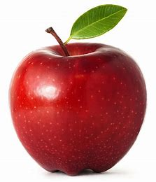
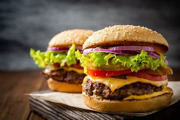

An apple is a round, edible fruit produced by an apple tree (Malus spp., among them the domestic or orchard apple; Malus domestica). Apple trees are cultivated worldwide and are the most widely grown species in the genus Malus. The tree originated in Central Asia, where its wild ancestor, Malus sieversii, is still found. Apples have been grown for thousands of years in Eurasia and were introduced to North America by European colonists. Apples have religious and mythological significance in many cultures, including Norse, Greek, and European Christian tradition.
A hamburger, or simply a burger, is a dish consisting of fillings—usually a patty of ground meat, typically beef—placed inside a sliced bun or bread roll. The patties are often served with cheese, lettuce, tomato, onion, pickles, bacon or chilis with condiments such as ketchup, mustard, mayonnaise, relish or a "special sauce", often a variation of Thousand Island dressing and are frequently placed on sesame seed buns. A hamburger patty topped with cheese is called a cheeseburger.[1]
